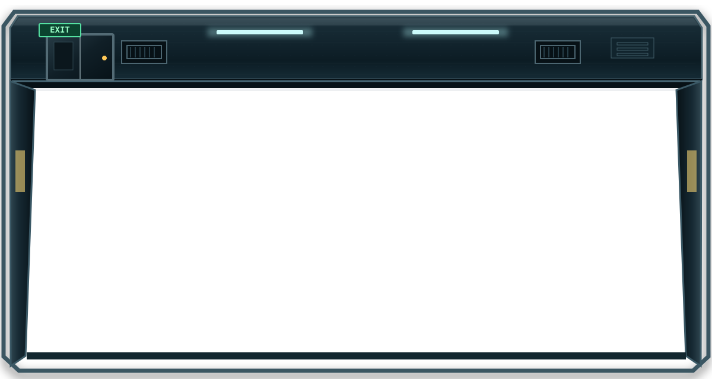
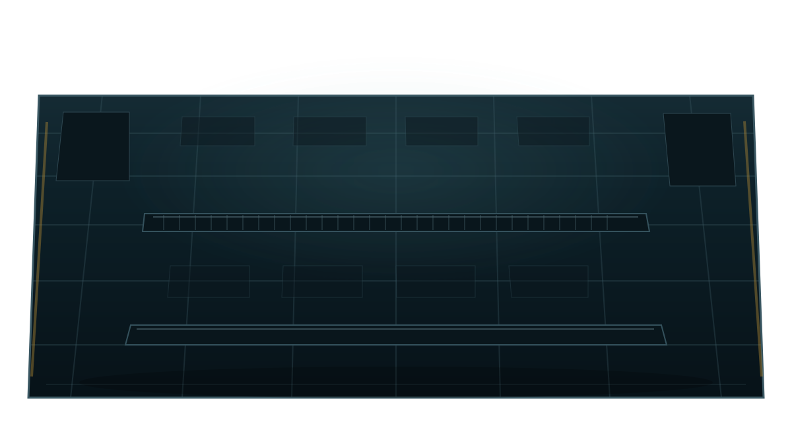

현재 점수 · Score
0PTS
RECOVERY REWARD · DIFFICULTY ×1.00
데이터센터 야간 운영 시뮬레이션
교대 제어
V1.1 PREVIEW · 2D OPERATIONS SCAFFOLD
2D 데이터센터 Floor Mode
2D Floor renderer loading…


안전한 Simulation 환경
실제 명령은 실행되지 않습니다. help를 입력해 조사 명령을 확인하세요.
MISSION OBJECTIVES
MISSION CONTROL
—
Rack을 선택하고 장애를 진단한 뒤 복구하세요.
OPERATIONS BACKLOG
현재 처리 대기 중인 Incident가 없습니다.
MANUAL TERMINATION
해결되지 않은 Incident는 최종 평가에 반영됩니다.
CURRENT SHIFT · RESOLVED ONLY
현재 Shift에서 해결 완료된 Incident와 RCA 기록입니다.
NO RESOLVED INCIDENTS
LOCAL BROWSER RECORDS · COMPLETED SHIFTS
종료된 과거 Shift Snapshot입니다. 현재 진행 데이터와 분리되어 있습니다.
NO ARCHIVED SHIFTS
DESTRUCTIVE ARCHIVE ACTION
이 작업은 현재 Shift에는 영향을 주지 않습니다.
SHIFT COMPLETE
22:00 → 06:00 운영 결과
OPERATIONS ANALYTICS
CURRENT SHIFT ONLY